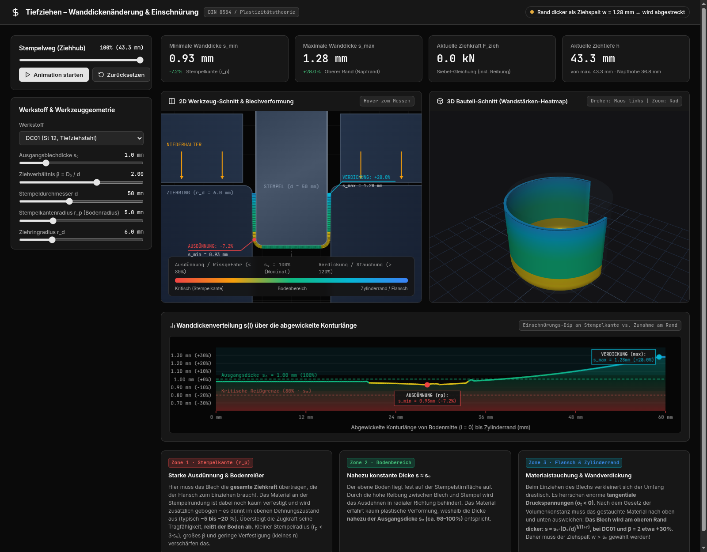

Interaktive Umformsimulation · läuft offline im Browser
Tiefziehen: Wanddickenverlauf & Einschnürung
Erstzug eines zylindrischen Napfes — vom ebenen Zuschnitt bis zum fertig durchgezogenen Napf. Halbanalytisches, volumenerhaltendes Membranmodell mit Flanschgleichgewicht nach Siebel, Fließbedingung nach Hill und Bodenreißer-Erkennung. Werkstoff, Blechdicke, Ziehverhältnis und Werkzeugradien sind live einstellbar, die Ziehkraft folgt dem Kraft-Weg-Verlauf.
Max. Ziehkraft (DC01, β=2)
≈ 54 kN
Siebel-Handrechnung ≈ 59 kN
Volumenerhalt am Hub-Ende
1,000
exakt 1
Ausdünnung Stempelkante
−7 %
typisch −5 … −20 %
Napfhöhe (d = 50 mm)
≈ 37 mm
analytisch 37,5 mm

Ende des Hubs · 2D-Werkzeugschnitt · 3D-Wandstärken-Heatmap · Wanddickenverlauf s(l)
Inhalt
Tiefzieh-Simulationonline
2D-Werkzeugschnitt mit Blechverformung, 3D-Schnittmodell mit Dicken-Farbkodierung (Three.js) und
Diagramm der Wanddickenverteilung über der Konturlänge. 5 Werkstoffe, Ziehhub-Animation,
Einschnürungs- und Rissgefahr-Anzeige.
simulation/ →
Pyramidenvolumen — warum ⅓?online
Eigenständige interaktive Seite zu V = ⅓ · a² · h: Wasser-Experiment, Zerlegung des Würfels in drei
Pyramiden, Cavalieri-Beweis, Nachrechnen mit Treppenpyramide. Drehbare 3D-Figuren, EN/DE.
pyramid-volume.html →
Excel-Arbeitsmappe.xlsx
Editierbare Formelblätter (Eingaben gelb, Ergebnisse grün) zu den Tiefziehaufgaben 6–10 —
inklusive Generator-Skript excel/generate_excel.py.
excel/…xlsx ↓
Musterlösungen mit RechenwegMarkdown
Eigene Lösungswege und Zusammenfassungen zu den Aufgaben 6–10 aus dem Rechenbuch Metall
(Europa-Lehrmittel, S. 248). Nur eigene Aufbereitung, kein Buchtext.
docs/…uebungen_6-10.md →